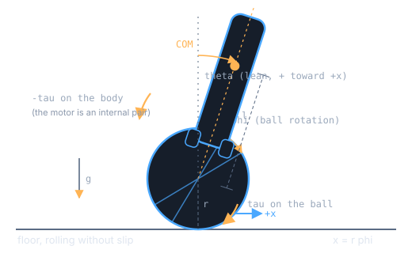
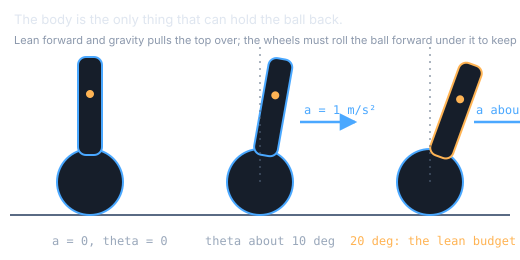
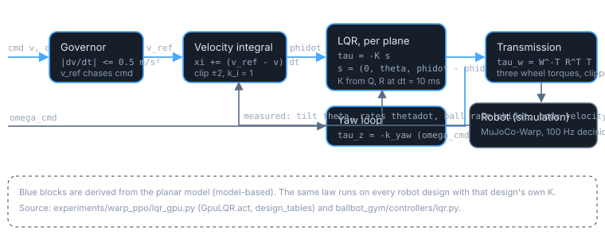
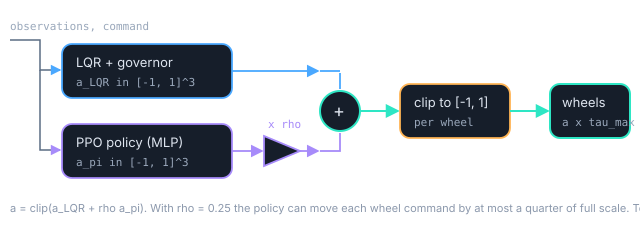
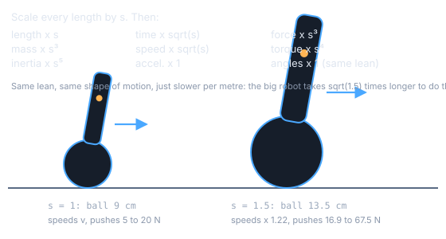
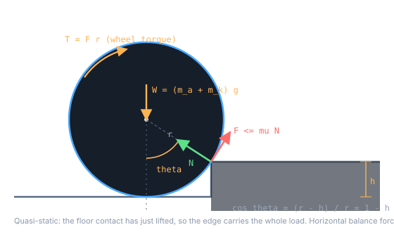
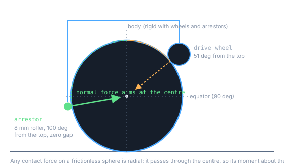
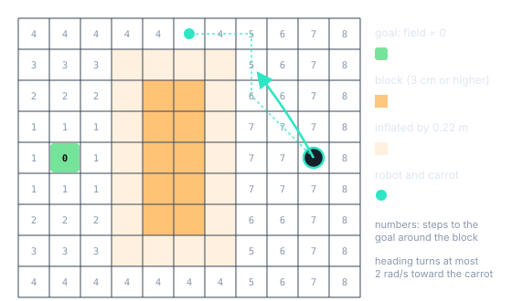

Why a ball-balancing robot is hard, in nine short derivations
This page walks from a drawing of the robot to every equation the controller relies on. Each step has a plain-words lead-in, the derivation, a small picture, and one line on why it matters. Nothing here requires more than school mechanics and a willingness to follow a few symbols.
In short
- A ballbot is an inverted pendulum on a ball. Left alone, a lean grows e-fold every 0.21 s.
- To go forward it must first roll backward (a non-minimum-phase zero), and to keep accelerating it must lean: \(\sin\theta=\kappa a\), about 10 degrees per m/s².
- An LQR designed on this model, with a velocity governor and a slow integral, tracks speed almost exactly. A small learned residual (authority 0.25) adds robustness without spoiling that.
- Scaling the robot by \(s\) scales speeds by \(\sqrt s\) and forces by \(s^3\), so commands and pushes are scaled the same way to keep the task fair.
- A ball cannot climb a step higher than \(r\,(1-\cos\arctan\mu)\), about 0.29 of its radius: 2.6 cm for the 9 cm ball. No controller changes that.
- Passive arrestors hold the body on the ball with forces through the ball's centre, so they leave the model untouched.
- A wavefront distance field and a carrot follower route the robot around what it cannot climb, smoothly.
Sources: paper_v2/main.tex (propositions 1 to 3 and the parameter table), scripts/study/ballbot_model.py (symbolic derivation), experiments/warp_ppo/lqr_gpu.py (the LQR as run), experiments/warp_ppo/retainer.py (arrestors), experiments/warp_ppo/nav.py (planner), and docs/research/tracking_study_log.md entries cited by their S-number. Live numbers are computed in your browser by assets/js/ballbot-model.js, a port of the Python model, and checked against it at the bottom of the page.
Two angles describe everything
Picture the robot from the side. A ball sits on the floor; a tall body balances on top of it, touching it through three small wheels. The wheels can spin the ball under the body. If we look only at motion in one vertical plane, there are just two things to track: how far the ball has rolled, and how far the body leans. Everything on this page follows from those two angles and a handful of masses and lengths.
Coordinates. Let \(\varphi\) be the rotation angle of the ball (radius \(r\)) and \(\theta\) the tilt of the body from vertical, positive when the top leans toward \(+x\). The ball rolls without slipping, so its position is tied to its rotation, and the body's centre of mass sits a height \(l\) above the ball's centre:
The motor is an internal pair. The wheels push on the ball and the ball pushes back on the wheels. So a torque \(\tau\) applied to the ball is matched by \(-\tau\) on the body. This single fact will explain the wrong-way start in section 2. The wheels turn with the relative angle \(\varphi-\theta\), and that is where their rotor inertia \(J\) and viscous damping \(d\) act.
| Symbol | Meaning | Value |
|---|---|---|
| ma | body mass, including wheels and sensors | 3.853 kg |
| l | body COM height above the ball centre | 0.1306 m |
| Ia | body pitch inertia about its COM | 0.0366 kg m² |
| mk, r | ball mass and radius | 0.168 kg, 0.09 m |
| Ik | ball inertia | 5.44 × 10-4 kg m² |
| Jeff, deff | wheel rotor inertia and damping, reflected into the plane | 0.1025 kg m², 2.05 N m s |
| τmax | wheel torque limit | 30 N m |
Values read from the simulator model file; table 1 of paper_v2/main.tex. The reflected rotor inertia is 188 times the ball's own inertia: the drive, not the ball, dominates what the controller feels.

From energy to equations of motion
Mechanics gives a recipe: write down the kinetic energy (motion) and potential energy (height), subtract them, and a standard procedure (the Euler-Lagrange equations) produces the equations of motion. We only need the result and two facts about it.
Energy. The ball translates and spins, the body translates with the ball and swings about it, and the rotors spin with the relative rate:
The bracket expands to \(r^2\dot\varphi^2+2rl\cos\theta\,\dot\varphi\dot\theta+l^2\dot\theta^2\). The middle term couples ball and body: move one and you move the other.
Equations of motion. With the motor pair \((\tau,-\tau)\) and the wheel damping on the relative rate:
This is derive_planar() in ballbot_model.py; the live simulator in section 4 integrates exactly these equations.
Near upright, it is a linear system
For small lean, \(\sin\theta\approx\theta\) and \(\cos\theta\approx1\). Collect the state \(s=(\varphi,\theta,\dot\varphi,\dot\theta)\) and the equations become \(\dot s=As+B\tau\). The matrices below are recomputed from the sliders:
Look at \(B\): one torque accelerates the ball forward (\(+\)) and tips the body backward (\(-\)). Opposite signs. Keep that in mind.
Change the robot. Every live number and plot on this page follows.
Fact 1: an unstable pole, the fall
A pole is a rate at which the system moves by itself. Set the torque to zero and ask how a tiny lean evolves.
With no wheel damping the linearised plant has poles \(\{0,0,\pm\lambda\}\),
Why. With \(\tau=0\) and small angles the equations read \(M_0\ddot q=K q\) with \(K=\mathrm{diag}(0,\,m_agl)\). The gravity entry \(m_agl\) is an inverted pendulum: it pushes the lean the way it is already going. Solving \(\det(M_0s^2-K)=0\) gives \(s^2(\det M_0\, s^2-m_aglM_{11})=0\).
For the robot on the sliders: undamped \(\lambda=\) 1/s, with damping \(p=\) 1/s, so a lean grows e-fold every s. A lower centre of mass or a bigger ball slows the fall; try the presets.
Fact 2: a right-half-plane zero, the wrong-way start
A zero tells you which way the output moves first. Here the output is the ball position and the input is the motor torque.
The transfer function from torque to ball position has a real zero pair \(\pm z\),
independent of the rotor inertia and the damping. The zero at \(+z\) makes the plant non-minimum phase.
Why, in words. To go forward the body must lean forward, because only a lean lets gravity pull the robot along. The only way to tip the body is to push on the ball, and the torque is an internal pair: it spins the ball one way and the body the other. So to lean forward the controller first rolls the ball backward. Any controller, model-based or learned, must show this reversal; the paper measured 0.3 to 1.7 cm of it in the full simulation.
Why, in algebra. Cramer's rule on the linearised equations gives the numerator of \(\hat\varphi/\hat\tau\) as \((M_{22}+M_{12})s^2-m_agl\). The \(J\) and \(d\) terms cancel because both act on the relative coordinate \(\varphi-\theta\).
One level deeper: the sensitivity floor, and why z and p being close is bad
Feeding back ball position through any stabilising linear controller, an unstable pole \(p\) and a right-half-plane zero \(z\) impose a floor on the peak of the sensitivity function (Skogestad's bound), with \(T\) the total loop delay:
It blows up as \(z\to p\). Loop shaping also wants the crossover above the pole and below about half the zero, \(p<\omega_cdesign_sweep.csv, \(z/p\) ranges from to : no body shape we tried opens the window. This is a statement about the model, not a hardware result.
To accelerate, lean. How much is fixed by the body.
A cyclist leans into a turn by an amount that depends on speed, not on skill. A ballbot leans into its acceleration the same way. The angle is set by masses and lengths alone, and no controller can bargain it down. This section derives the exchange rate.
Adding the two rows of the equations of motion cancels the torque and the damping (both enter as \(+\) and \(-\)):
Hold a steady lean (\(\ddot\theta=\dot\theta=0\)) and write the ball acceleration as \(a=r\ddot\varphi\). Then \(\sin\theta=\kappa a\) with
The identity has no control term in it, so it holds on every trajectory of every controller. The paper used it as a controller-independent check of the inertia model: regression slope 0.88 to 0.93 against the simulator. It also contains the wrong-way start: right after a torque, before the lean has changed, the right-hand side is still zero, so \(\ddot\varphi\) and \(\ddot\theta\) must have opposite signs.
For the robot on the sliders, \(\kappa\) is ° of lean per m/s². A 20° lean budget therefore caps sustained acceleration near m/s².

One matrix of gains, and three fixes that make it usable
An LQR is the textbook way to stabilise a linear system: pick how much you dislike each state error and how much you dislike using torque, and a standard equation hands you the gains. On its own it balances. To make it follow speed commands on a real contact simulation it needs a governor, an integral, and a yaw loop. Each exists for a measured reason.

lqr_gpu.py. Blue blocks are derived from the planar model.The gain
Per plane the state is \(s=(\varphi,\theta,\dot\varphi-\dot\varphi_{\mathrm{ref}},\dot\theta)\) and the torque is \(\tau=-Ks\). The weights say what we care about:
Almost nothing on ball position (the robot may drift), a lot on lean (50), moderate on the rolling-rate error and the lean rate, and unit cost on torque. With these the continuous-time Riccati equation gives \(K\approx(0,\,76.1,\,4.33,\,11.6)\) in magnitude and closed-loop poles near \(-20.3,-5.02,-4.50\) and 0 (paper_v2). The pale crosses in the section 2 plot are these poles.
Designed at 10 ms, not in continuous time
The controller only acts every 10 ms and holds its torque in between. The GPU implementation designs the gain for that sampled system directly: the model is discretised with a zero-order hold, and the discrete Riccati equation is solved with the weights scaled by the step so that the discrete cost approximates the continuous integral:
lqr_gpu.py, design_tables(). One \(K\) is computed per robot design from that design's own \((A,B)\); the earlier CPU study found the continuous design could go unstable under the hold for light rotors, which is why the discrete form is the default here.
The velocity governor: why
A step in the commanded speed would ask for an impulsive torque and a large wrong-way reversal (section 2). The governor turns the step into a ramp: the internal reference \(v_{\mathrm{ref}}\) moves toward the command by at most \(a_{\max}\Delta t\) per step,
By the lean law that is about 5° of lean. Switch the governor off in the simulator and watch the reversal and torque spike grow.
The integral: why
The linear model is not the simulator. The soft ball-floor contact creeps and the wheels roll with a slightly different effective radius, so a pure LQR settles at a speed a little off the command. A slow integral of the velocity error corrects the rolling-rate reference and removes that offset:
The clip is anti-windup. Result on flat ground: achieved speed 0.99 to 1.01 of the command, error at most 0.04 to 0.06 m/s up to 0.9 m/s (brief fact sheet, S83).
Yaw and the wheels
Spinning in place is a third, decoupled channel with a simple proportional loop, \(\tau_z=-k_{\mathrm{yaw}}(\omega_{\mathrm{cmd}}-\omega_z)\), \(k_{\mathrm{yaw}}=5\). The two plane torques and \(\tau_z\) are rotated into the body frame and mapped to the three wheels by the inverse transpose of the omniwheel transmission \(W\), then normalised by the torque limit and clipped to \([-1,1]\).
Let a learned policy nudge the LQR, but only so far
Instead of replacing the LQR with a neural network, we keep it and let a trained policy add a correction on top. A single number, the authority \(\rho\), sets how large that correction may be. Turning it is a direct trade between tracking accuracy and robustness, and the measurements show a knee.
Here \(a_{\mathrm{LQR}}\) is the normalised wheel command of section 4 and \(a_\pi\) the policy's output for the three wheels. Because \(a_\pi\) is bounded, the policy can move each wheel by at most \(\rho\) of full scale. With \(\rho=0.25\) the LQR always keeps at least three quarters of the say. The policy's output layer starts near zero, so training begins from the LQR itself and learns only what the LQR gets wrong.
train_dev.py: applied = (lqr.act() + rs * a).clamp(-1, 1), where rs is the authority; --lqr-base argument.
What authority does, measured
All rows: trained and evaluated with the arrestors of section 8, three domain-randomisation scales, 176 worlds per terrain kind, seed 0 unless noted. Tracking is achieved speed over commanded speed on flat ground; robust is goal success with pushes and pulls at scale 1.
| Learned authority ρ | flat tracking | goal, undisturbed | goal, pushes + pulls |
|---|---|---|---|
| 0.15 | 1.01 to 1.02 | 0.69 | 0.35 |
| 0.25 | 0.99 to 1.01 | 0.71 to 0.76 | 0.42 to 0.43 |
| 0.35 | 0.92 to 0.97 | 0.72 | 0.45 |
| 0.5 | 0.80 to 0.90 | 0.71 to 0.76 | 0.46 to 0.49 |
| pure learning (no LQR) | 0.66 to 0.83 | 0.70 to 0.74 | 0.50 |
S82 and S83 of tracking_study_log.md; the 0.25 row spans two seeds (a third seed in S84 agrees). Without arrestors the same controller reaches 0.58 to 0.60 and 0.29 to 0.30.

A bigger robot is the same robot in slow motion
The study trains one policy on eleven robot designs, including robots scaled up and down. For that to be fair, a half-size robot must not be asked to run as fast in metres per second as a full-size one. Mechanics says how speeds, forces and times should scale when every length is multiplied by \(s\). The rule is older than robots: ship designers call the relevant ratio the Froude number.
- Scale the geometry. Multiply every length by \(s\): \(r\to sr\), \(l\to sl\). Keep the materials, so masses scale with volume, \(m\to s^3m\), and inertias with mass times length squared, \(I\to s^5I\).
- Look for a time scale that keeps the equations the same. Divide the equations of motion by \(m_agl\). Every term becomes a ratio of the form (mass × length²)/(mass × g × length) × (1/time²), that is \(l/(g\,t^2)\). Those ratios are unchanged if \(t\to\sqrt{s}\,t\).
- Read off the rest. Speed is length over time: \(v\to\sqrt{s}\,v\). Acceleration is length over time squared: unchanged. Angles: unchanged (so the lean law's \(\kappa\) is the same number for every scale; check it from its formula, numerator and denominator both go as \(s^5\)). Force is mass times acceleration: \(F\to s^3F\). Torque is force times length: \(\tau\to s^4\tau\). The unstable pole is a rate, \(p\to p/\sqrt{s}\): a half-size robot falls \(\sqrt2\) times faster.
Why commands and pushes are scaled
The command range is multiplied by \(f=\sqrt s\) (design_space.py writes cmd_vmax = 1.2 f into each design's config, and the GPU environment multiplies every sampled speed and every planner speed by f_w). Pushes are scaled with the robot's weight: the 1.5× design's config asks for 16.9 to 67.5 N instead of 5 to 20 N, which is the factor \(1.5^3=3.375\) (configs/env/dz_s1.5.yaml). Without this a large robot would be tested at a relatively gentle crawl with relatively feeble shoves, and a small robot at an impossible sprint, and no single number could compare them.

How high a step can a ball climb?
For a long time the obstacle falls looked like a controller problem: more training, more sensing, a better policy. A one-line force balance says otherwise. A driven ball pressed against a step edge can only get over it if friction at the edge can supply the sideways force needed, and that caps the step height at a fixed fraction of the ball's radius. This is new on the site, so the derivation is spelled out with its assumptions.
Assumptions
Derivation
- Geometry. A ball of radius \(r\) touches a step of height \(h\) at its edge. The line from the edge to the ball centre makes an angle \(\theta\) with the vertical, and the centre sits \(r-h\) above the edge, so
$$\cos\theta=\frac{r-h}{r}=1-\frac{h}{r}.$$
- Lift-off. To climb, the ball must leave the lower floor and pivot on the edge. At that moment the edge is the only support, so it carries the whole vertical load \(W=(m_a+m_k)g\). The edge reaction has a normal part \(N\) along the edge-to-centre line and a friction part \(F\) along the tangent.
- Force balance. Quasi-static, so the horizontal forces cancel and the vertical forces carry the weight:
$$N\sin\theta-F\cos\theta=0,\qquad N\cos\theta+F\sin\theta=W .$$The first line gives \(F/N=\tan\theta\): the steeper the contact, the larger the share of the load that friction must carry.
- What drives it. The wheel torque on the ball must equal the moment of the edge friction about the centre, \(T=Fr\). The torque is available (no wheel slip, motors far from saturation: under 1 percent in S79), so the only question is whether the edge can hold \(F\).
- Coulomb limit. Friction can supply at most \(\mu N\). So climbing is possible only when \(\tan\theta\le\mu\), that is \(\theta\le\arctan\mu\), and therefore
$$h_{\max}=r\,\big(1-\cos(\arctan\mu)\big)=r\Big(1-\frac{1}{\sqrt{1+\mu^2}}\Big).$$
With \(\mu\approx1\) this is \(\theta\le45^\circ\) and \(h_{\max}\approx0.29\,r\): 2.6 cm for the 9 cm ball, 4.0 cm for the 13.5 cm ball of the 1.5× design (S88). The simulated surfaces span friction 0.4 to 1.2, so the limit varies per world between about 0.07 r and 0.36 r.
Test
The same controller, trained only on 9 cm balls, was driven at 0.3 m/s at steps and bumps on both balls (S88, 640 worlds per kind, undisturbed). On the larger half of each range the 9 cm ball fell 0.98 at step-ups and 0.94 at bumps; the 13.5 cm ball fell 0.80 and 0.62, crossing features the small ball never crossed. Drops, which are not a traction problem, changed little. A perfect height map given to the balance policy did not reduce these falls either (S88): the limit is physical, not a lack of foresight.

Why holding the body onto the ball leaves the model unchanged
Before the arrestors, 95 percent of falls were not tip-overs. The body slid off the ball at about 15 degrees of tilt, with the motors below 1 percent of their limit (S79). The model of sections 1 to 4 assumes body and ball stay together, pivoting about the ball's centre; the simulated robot held them together only by gravity and three wheel contacts. Three small passive rollers fix that. The argument that they do not disturb the derived dynamics is a one-liner about spheres.
The geometry
Each arrestor is a sphere of radius 8 mm fixed to the body, on the azimuth opposite one drive wheel, at a polar angle of 100° from the top of the ball (just below the equator). It is placed to touch the ball exactly when the robot stands seated under gravity, with zero gap and zero preload (retainer.py, settle() and arrestor_positions()). The frictionless default models an ideal ball-transfer unit; mass is neglected (real units weigh about 10 g).
The force argument
- Seated, it does nothing. With zero gap and zero preload the arrestor carries no force while the wheels sit on the ball. The planar model is then exactly the one derived above.
- When it acts, its force is radial. A contact force on a frictionless sphere is normal to the surface, and every normal of a sphere passes through its centre. So the arrestor's force on the ball has zero moment about the ball's centre: it cannot spin the ball, and it does not enter the ball's rotational equation at all.
- It is an internal body-ball force. It acts equal and opposite on body and ball, like the pin the planar model already assumes between them. It constrains the body from lifting or sliding off; it adds no new degree of freedom and no new drive. The model becomes more true, not different.
- With roller friction, barely anything changes. Sliding friction 0, 0.05 and 0.2 on the arrestors gave goal success 0.75, 0.74 and 0.76 undisturbed and 0.45, 0.42, 0.42 disturbed, equal within noise, because seated arrestors carry no load and so their drag barely acts (S79).
Measured effect
Added at evaluation to a policy trained without them (zero-shot): goal success rose from 0.57 to 0.75 undisturbed and from 0.28 to 0.45 with pushes and pulls, and the misalignment at fall dropped from 12 to 19 degrees to 2 to 3 degrees (S79, 100° mount). Mounts between 90 and 100° were equal within noise; 100° was chosen because only a mount below the equator can resist the body lifting off. Floor clearance at 100° is 6.5 cm, touching only beyond 57° of tilt; the diametrically opposite mount at 135° would scrape at 21° and is not buildable on this ball (S79).

A distance field and a carrot
If a block is three times higher than the ball can climb, the only answer is to go around it. The navigation layer sits above the balance controller and only ever hands it a velocity command; the balance controller never sees the map. Two ideas do the work: a grid where every cell knows how far it is from the goal, and a follower that aims at a point a little way down that grid rather than at the goal itself.
The wavefront distance field
Around the robot's tile lies a \(64\times64\) grid of 5 cm cells. A cell is an obstacle if the ground there is more than 3 cm above the start ground; obstacles are inflated by 0.22 m (robot half width plus margin) with a max-pool. The goal cell gets distance 0 and every other free cell is relaxed repeatedly over its eight neighbours:
After 110 sweeps the field holds the number of steps to the goal around every obstacle (nav.py, field()). It is recomputed every 0.2 s from the privileged map or from the sensor memory (section 5 of the architecture page). A local rule (steer away from nearby obstacles) was tried first and left 0.56 to 0.59 of worlds stuck in local minima beside the blocks; a distance field has no local minima (S89).
The carrot follower
The first planner stepped toward the best of 24 points 0.15 m away, every step. It reached the goal 0.91 of the time but its commanded heading jumped about: heading-rate RMS 14.4 rad/s (S89, S90). The smooth follower reads the same field differently:
- Carrot. Descend the field greedily in 5 cm steps for 0.3 m from the robot. The point reached is the carrot. Several cells ahead, so small map changes do not flip the heading. If the robot stands inside the inflated margin (field \(=\infty\)), start the descent from the best point on rings 0.1 to 0.3 m around it, or the carrot never leaves the robot (S90).
- Heading. Turn the commanded heading toward the carrot at most \(w_{\max}=2\) rad/s.
- Speed. \(v=\min\big(v_{\max},\ k_{\mathrm{goal}}\,d_{\mathrm{goal}},\ v_{\mathrm{turn}}\big)\) with \(v_{\max}=0.3\) m/s, \(k_{\mathrm{goal}}=1.5\), and \(v_{\mathrm{turn}}\) lowered when the heading error is large; the speed itself changes at most 0.6 m/s². All speeds are multiplied by the design's Froude factor \(\sqrt s\).
With the privileged map the heading-rate RMS fell from 14.4 to 1.7 rad/s for a few points of success (0.91 to 0.86), because rate-limited turns clip block corners slightly more often (S90).
With a real sensor, aim it
With a forward ToF sensor (18×14 zones) the smooth follower first did worse than the jerky one (0.72 against 0.85), because the head gimbal followed the slowly turning command and saw side blocks late. Aiming the sensor at the planner's target heading instead recovered most of it: 0.78 success, block contacts 0.16 to 0.03, heading-rate RMS 1.8 (S90). Mount and pitch matter more than resolution (S89).

Honesty section
Soft contacts
Instantaneous torque-step accelerations match for the ball (3.17 vs 3.01 rad/s² per 0.5 N m) but not for the body (0.73 vs 1.60), because MuJoCo's soft ball-floor contact allows initial creep (paper_v2, validation section). This is what the velocity integral of section 4 mops up.
No traction in the plane
The planar model has no slip and no edges. The traction limit of section 7 is a separate quasi-static argument, not a consequence of the Lagrangian; and the planar torque that friction can carry on flat ground is only about 1.74 N m against \(m_agl=4.94\) N m (design_constraints.csv).
Light balls
The body-to-ball mass ratio is 23 here; the model is least faithful for light balls. The light-ball design kb025 carries nearly all remaining flat-ground falls and LQR gains cannot fix it (S92, S93). See docs/research/design_rules.md.
JavaScript versus Python
The browser model is a re-implementation, so it is checked against the Python reference. The Python column is read from site/data/designlab_tables.json, a verbatim copy of outputs/study/results/design_sweep.csv; the JS column is computed live on this page. Pass means agreement within 1 percent.
Structural identities and the paper's printed numbers (nominal robot)
| Quantity | JS (live) | Reference | Reference source | Rel. error | Status |
|---|
What is and is not checked
Checked: poles, zero, lean law, Skogestad floor, LQR closed-loop pole and 3 degree peak torque, every row of the sweep. The LQR is solved in the browser by Newton-Kleinman iteration on the Riccati equation and compared with scipy.linalg.solve_continuous_are through the closed-loop poles and peak torque. Not checked here: the nonlinear RK4 simulator has no Python counterpart in the repo (the full MuJoCo environment is the reference and differs from this planar model, see above); the traction, Froude, authority and wavefront widgets are illustrations of closed-form rules and of the S-numbered measurements, not new computations.